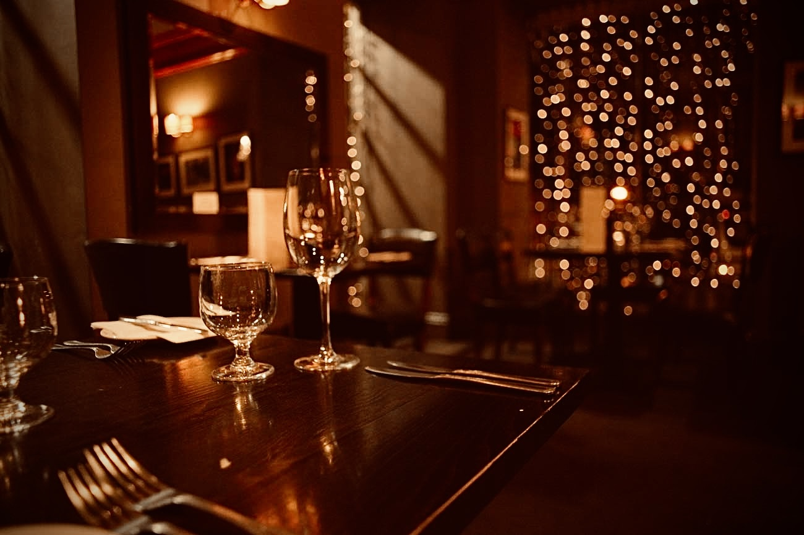

What Our Restaurant Consulting Covers
An effective restaurant consulting engagement goes well beyond surface-level advice. Klarity conducts a comprehensive operational audit to identify inefficiencies, revenue leaks, and untapped opportunities across every facet of your business. Our specific deliverables include:
- Operational audit and efficiency analysis
- Menu engineering and menu development
- P&L review and financial performance optimization
- Brand positioning and competitive differentiation
- Pre-opening and post-opening strategic support
- Restaurant turnaround programs for struggling concepts
- Talent acquisition and management recruitment
Who This Is For
Our restaurant consulting services are built for three types of operators. First, restaurant owners watching margins shrink who cannot identify the root cause — declining profitability rarely has a single source, and Klarity's consultants are trained to diagnose the full picture. Second, entrepreneurs preparing to open a new restaurant who want to get the fundamentals right before the doors open, when corrections are far less costly. Third, established operators scaling from one location to multiple, where growth amplifies both opportunity and operational complexity. Klarity provides the systems and structure to expand sustainably.
Our Process
Every Klarity engagement follows a structured four-step approach designed to move from diagnosis to measurable improvement.
- Initial Assessment — We review your current operations, financials, staffing, and guest experience data to understand where you stand today.
- Diagnosis — We identify root causes, not symptoms, benchmarking against industry standards and pinpointing specific performance gaps.
- Strategy — We develop a tailored action plan with clear priorities, timelines, and measurable outcomes specific to your concept and market.
- Implementation — We remain involved during execution, providing accountability, coaching, and real-time course correction as your team puts the plan into practice.
Why Klarity
Klarity Restaurant Advisors brings over 37 years of hands-on restaurant industry experience to every engagement. Our lead advisor has operated, grown, and turned around restaurant concepts across multiple formats and markets. This is not theoretical consulting — it is experience-backed advisory grounded in what actually works on the floor and in the financials. We are based in Charlotte, NC and work with independent restaurants, regional groups, and multi-unit operators throughout the Southeast and beyond.
Frequently Asked Questions
What does a restaurant consultant actually do?
A restaurant consultant analyzes your operations, financials, menu performance, and team dynamics to identify where your business is underperforming and why. The work goes beyond recommendations — Klarity consultants help you design and implement the systems that make improvements stick, including identifying cost and revenue leaks, restructuring processes, and providing accountability during execution.
How much does restaurant consulting cost?
Industry rates range from $2,000 to $25,000 for project-based engagements and $75 to $300 per hour for advisory work. The investment varies by scope, restaurant size, and engagement length. Klarity offers a free initial consultation to assess your situation before any commitment.
How long does a consulting engagement take?
Timeline varies by scope. Turnaround programs for struggling restaurants typically run 90 days. Pre-opening support can begin 6 or more months before your launch date. Targeted projects — menu development or operational audits — can often be completed in 2 to 4 weeks.
Can a consultant help a restaurant that's losing money?
Yes. Turnaround consulting is one of the most impactful applications of restaurant advisory work. Klarity's methodology begins with a rapid diagnosis of the financial and operational drivers of decline — typically a combination of cost structure issues, menu underperformance, staffing problems, and guest experience inconsistencies — followed by a structured intervention plan that addresses each factor in order of impact.
Many of our consulting engagements include complementary staff training programs and quality assurance audits — creating a comprehensive path to operational excellence.